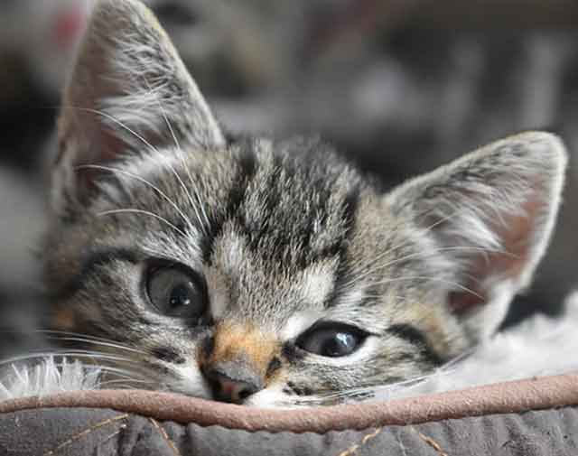
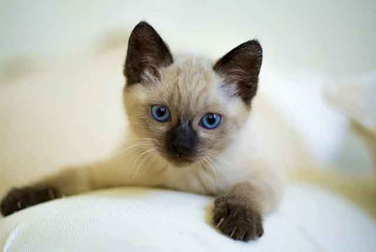
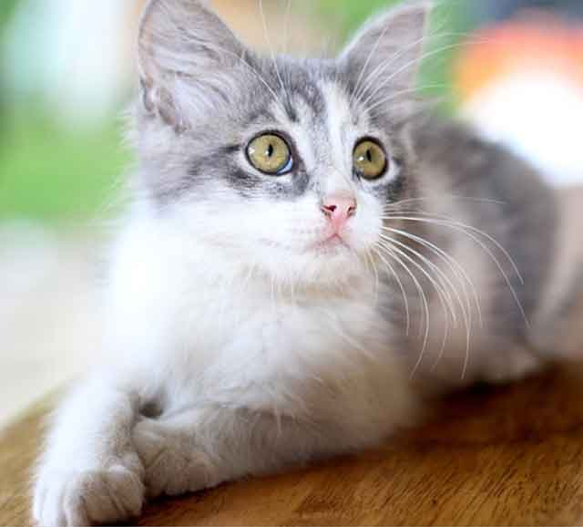
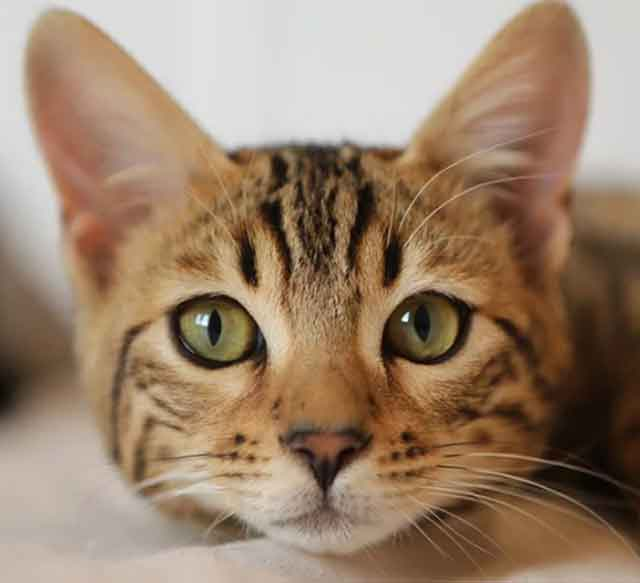
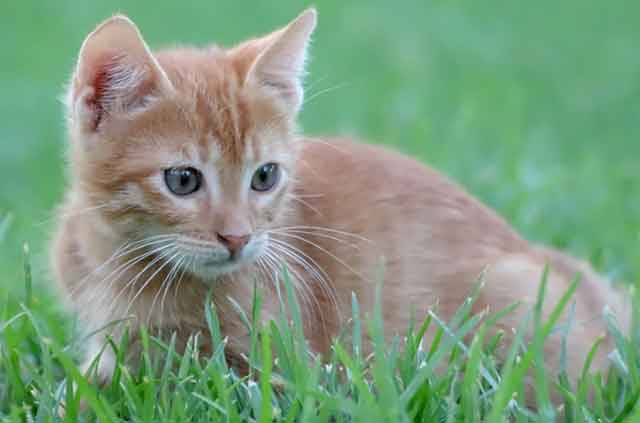

고양이 스크래쳐 어떤 기능을 하는 걸까?
고양이 장난감도 여러 가지가 있습니다. 깃털부터 레이저 포인트 등이 있고 대표적으로 가정에 많이 두는 용품 중 하나가 바로 '스크래쳐'입니다. 스크래처는 새끼고양이부터 성견이 된 고양이까지 다양한 연령대의 고양이가 이용하는 용품입니다. 갑자기 누워있다가도 스크래쳐로 다가가 발톱을 마구 긁는 행동을 보이기도 하죠. 고양이 스크래쳐는 어떤 기능을 하는지 궁금하지 않으셨나요? 고양이 스크래쳐에 대해서 간단하게 알아볼게요!
고양이에게 발톱은 높은 곳에서 착지할 때, 높은 곳을 오를 때, 위협하는 것으로부터 자신을 보호할 때 등 여러 상황에 쓰이는 아주 중요한 신체 부위입니다. 그래서 길에서 생활하는 길고양이는 발톱을 깎지 말아야 한다는 이야기가 있죠. 물론 가정에서 길러지는 고양이는 사람과의 생활에서 안전을 위해 발톱을 깍지만 외부 활동을 하는 고양이가 발톱을 깎지 않는 이유가 위와 같은 이유에서 비롯된다고 할 수 있습니다.
"고양이가 스크래칭 하는 이유"
1) 영역을 표시할 때
고양이 발바닥은 영역을 표시할 때 필요한 땀, 호르몬 냄새가 묻어져 나옵니다. 고양이 젤리 사이 사이로 분비되는 고양이 채취를 남기기 위해 스크래쳐를 마구 긁는 행동을 보입니다.
2) 기분이 좋을 때
기분이 좋은 고양이는 흥분을 감추지 못하고 스크래쳐를 긁을 수 있어요. 또, 스크래쳐를 긁으면서 안락함을 느끼기도 흥분된 마음을 진정시킬 수도 있어요.
3) 발톱 정리할 때
고양이는 길어진 발톱을 정리할 때도 스크래쳐를 활용할 수 있어요. 새 발톱이 잘하면 죽은 발톱은 자연스럽게 스크래쳐를 통해 탈락시킬 수 있어요.
4) 스트레칭할 때
고양이도 사람처럼 기지개를 켭니다. 그러면서 발톱을 가는 행동을 하기도 해요. 기지개를 켜면 어깨, 등 근육을 펼 수 있어요. 따라서 고양이 주변에 스크래쳐를 두면 가벼운 스트레칭부터 스트레스를 푸는 용도로도 활용할 수 있어요.
"가구를 긁는 행동을 한다면?"
아무리 사랑하는 고양이가 하는 행동이라도 집 안 가구를 긁어 놓는다면, 속이 쓰릴 수밖에 없습니다. 그래서 고양이의 이런 행동을 방지하기 위해서 주변 곳곳에 스크래쳐를 두면 도움이 된답니다.
고양이의 발톱을 활용한 활동은 자연스러운 본능입니다. 그래서 무조건 막기보다는 발톱 긁는 행동을 주변 스크래쳐로 옮겨갈 수 있도록 적극적으로 이끌어 주는 것이 필요해요. 스크래쳐도 종류가 다양한 편이에요. 그래서 무조건 골판지로 된 스크래쳐만 고집하기보다는 고양이가 좋아하는 줄 스크래쳐나 세로형, 가로형, 캣타워에 함께 있는 스크래쳐 등 다양한 스크래쳐를 활용해 고양이의 본능을 자유롭게 펼칠 수 있도록 도와주시길 바랄게요!
[출처] 고양이 스크래쳐 어떤 기능을 하는 걸까? ｜ 작성자 우리집 사고뭉치